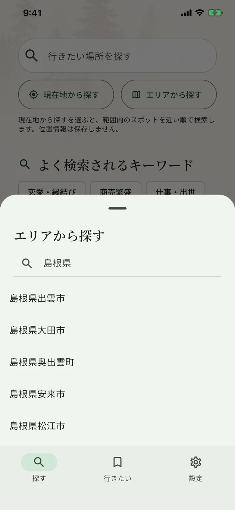

各地のパワースポットを、
ひとつのアプリで。
神社や寺院、森・山・滝・海など。
気になるエリアや言葉から、カタログに掲載された場所をまとめて探せます。
収録例：北海道の賀老の滝、京都の伏見稲荷大社・清水寺、島根の出雲大社。
エリアから探す
例：「島根県」で市町村を検索

掲載スポットを一覧で見る
例：京都府京都市の検索結果
2つの画面は別々の検索例です。スポット名や気になるキーワードからも検索できます。
掲載画面は実際のアプリのものです。端末・バージョンにより表示は異なります。
見つけた場所を、
記事でもっと知る。
気になるスポットが見つかったら、由緒や信仰・文化的な背景、見どころを紹介する記事へ。どんな場所なのかを、訪れる前に確認できます。
この場所をパワースポットとして感じる鍵は、「縁結び」を恋愛だけに閉じないことです。大国主大神が司るとされる目に見えないご縁は、人と人の関係、親子のつながり、仕事との出会い、土地との結びつき、過去と未来の連なりまで含んでいます。
「縁結び」で知られる場所を、人や仕事とのつながりから読む。記事では、御本殿、八雲山、素鵞社などの見どころも紹介しています。
信仰・文化的な背景を紹介する記事です。ご利益や効果を保証するものではありません。
記事の内容を、アプリ画面でも確認できます。
見つけた場所を、記事でもう少し知る。
訪れるときには、詳細から外部の地図で場所を確認できます。
見つけた場所を、
あとから見返せる。
気になるスポットは「行きたい」に保存。検索で見つけた場所をひとつのリストに残して、あとから確認できます。
保存した場所は、名前やエリアで並べ替えたり、キーワードで探したりできます。東京・千葉・島根など、地域をまたいだ候補も同じリストにまとめられます。
掲載画面は実際のアプリのものです。端末やバージョンにより表示が異なります。画面内の写真の出典
エリアや言葉から、
気になる場所へ。
探すところから、
見つけた場所を残すところまで。
エリア・キーワードで探す
都道府県やエリアを選んだり、気になる言葉を入力したり。各地の掲載スポットを、同じアプリから探せます。
見つけた場所を知る
詳細ページで、由緒や見どころ、アクセスを確認できます。
保存して、地図へ
気になる候補を「行きたい」に保存。行き先が決まったら、詳細から外部の地図を開いて場所を確認できます。
よくある質問
どんなふうにパワースポットを探せますか？
都道府県やエリアを選び、スポット名や気になるキーワードで検索できます。KOKORO SPOTに掲載された各地の神社・寺院・自然のスポットを、ひとつのアプリで探せます。日本のすべてのパワースポットを網羅するものではありません。
どんな場所を探せますか？
日本各地の神社・寺院に加え、山・森・滝・海・洞窟などの自然の景勝地を掲載しています。都道府県やエリア、キーワードから探せます。
無料で使えますか？
はい、無料で全機能を使えます。
オフラインでも使えますか？
収録記事の本文は、インターネットに接続していない場所でも読めます。外部の地図や公式サイトの閲覧などには通信が必要です。すべての機能のオフライン利用を保証するものではありません。
ご利益や効果を保証するアプリですか？
いいえ。パワースポットの紹介は、由緒や信仰、文化的な背景に基づくものです。記事中の相性の目安は編集上の解釈であり、科学的な効果や特定の結果を保証するものではありません。
iPhoneでも使えますか？
iOS版は現在、App Storeの審査に対応しています。配信開始日は未定です。公開を確認した後に、このページでご案内します。Android版はGoogle Playで配信中です。
パワースポット探しを、
ひとつのアプリから。
エリアや気になる言葉から、掲載スポットを探してみよう。

Android版 · 無料（広告・アプリ内購入あり）
iOS版は審査対応中です。